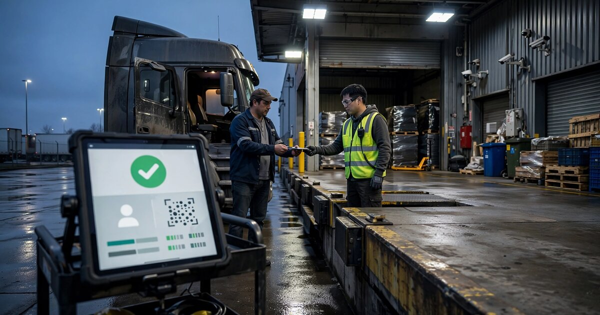

Freight Carrier Identity Verification SaaS
Cargo theft losses surged 60% in 2025 to an estimated $725 million. The fastest-growing attack vector isn't smash-and-grab. It's impersonation. Criminals obtain fake FMCSA operating authority, clone legitimate carrier identities, and walk away with six-figure loads at the pickup dock. The industry vets carriers when they onboard. Nobody verifies them when they show up.

The Problem
A freight broker books a carrier to pick up $280,000 in electronics from a warehouse in Ontario, California, runs the carrier's MC number through their compliance platform, confirms insurance is current, and marks the load as assigned in their TMS. Everything looks clean. A truck shows up at the dock, the driver presents a bill of lading, dock workers load the freight, and the truck drives away. It never arrives at the destination.
What happened is that someone stole a legitimate carrier's identity, called the broker, quoted a competitive rate, and presented credentials that passed every automated check because the credentials were real but belonged to someone else entirely. The FBI and industry analysts have a term for this pattern: strategic cargo theft.
Verisk CargoNet's 2025 annual report recorded 3,594 supply chain crime events across the US and Canada, with confirmed cargo theft incidents rising 18% year-over-year to 2,646. The estimated losses hit $725 million, up 60% from 2024. The average value per theft climbed 36% to $273,990. Criminals are getting more selective, targeting higher-value freight with more sophisticated methods.
Deceptive pickups are the fastest-growing category, and the trajectory is staggering. Overhaul's 2025 threat report documented a 91% surge in deceptive pickups between 2022 and 2023, followed by a 57% increase from 2023 to 2024, and another 35% from 2024 to 2025. These aren't opportunistic trailer break-ins at truck stops where someone cuts a lock and grabs whatever is inside; they're premeditated identity fraud operations run by organized groups using hacked emails, stolen load IDs, phishing calls, forged documents, AI-generated voice clones, and fake FMCSA registrations to walk through the front door of a warehouse and drive away with the freight.
Double brokering is the cousin problem, and it's just as corrosive. A broker assigns a load to a carrier who quietly re-brokers it to someone else without telling any of the parties involved. The second carrier hauls the freight but often never gets paid, because the first carrier pockets the rate difference and disappears. A FreightWaves/TriumphPay survey found that 85% of freight brokers and carriers have been impacted by double brokering, and the industry estimates it costs $500 million to $700 million annually in direct losses, payment disputes, and operational disruption. Combined with strategic theft, the total freight fraud exposure exceeds a billion dollars a year.
Why Existing Solutions Don't Close the Gap
The freight industry has tools for carrier compliance, fraud alerts, and route risk scoring, but none of them address the fundamental vulnerability at the pickup point where physical custody of freight changes hands.
| Company | What They Do | What's Missing |
|---|---|---|
| Verisk CargoNet | Post-incident reporting, route risk scoring (RouteScore API), theft alerts | Reactive. Tells you theft is likely on a route or that a theft occurred. Doesn't verify who shows up at the dock. |
| Truckstop RMIS | Carrier onboarding, compliance monitoring, TIN cross-verification with IRS, TMS integration | Verifies at onboarding. A carrier that was legitimate six months ago can have its identity stolen tomorrow. No pickup-point verification. |
| Highway | Carrier identity monitoring, continuous compliance, integration with load boards | Good continuous monitoring of carrier entities, but no driver-level identity verification at pickup. Detects anomalies in carrier data, not in who physically shows up. |
| Overhaul FraudWatch | AI-enabled carrier risk scoring from millions of shipments, fraud indicator detection | Scores carriers at assignment time. The Trojan Horse scam (criminals embed as drivers at legitimate carriers) bypasses entity-level scoring entirely. |
| DAT / Truckstop Load Boards | Load matching, carrier search, basic vetting | Marketplace. Vetting is a feature, not the product. Focused on connecting loads to carriers, not securing the handoff. |
| project44 / FourKites | Supply chain visibility, real-time tracking | Visibility after pickup. If the wrong person picked up the freight, tracking them doesn't help. The damage is done. |
The pattern is consistent across every major player in the space: carrier vetting happens at onboarding or at load assignment, route risk gets scored before dispatch, and theft gets reported after it happens. But the actual moment of vulnerability, when a driver backs up to a dock and someone hands them $280,000 in freight, has almost no verification layer protecting it at all.
Scott Cornell, chief risk officer for SPG Cargo & Logistics and chair of TAPA Americas, described a new "Trojan Horse" scam to FleetOwner in April 2026 that illustrates the problem perfectly: criminals send operatives to get hired as drivers at legitimate carriers, haul loads normally for weeks to build a clean track record, then walk away from a high-value shipment so their crew can steal it. The carrier passes every vetting check imaginable because it is a legitimate carrier with real insurance and a valid MC number. The driver is the attack vector.
The Solution
A three-layer identity verification platform that operates at the pickup point rather than just at onboarding, closing the gap between when a carrier is vetted and when freight actually changes hands:
1. Real-time driver identity verification at pickup. When a driver arrives at a shipper's dock, they scan a QR code or tap an NFC checkpoint, the system captures a photo and matches it against the driver's verified identity on file (submitted during carrier onboarding and linked to their CDL), and then confirms that this specific person is authorized to pick up this specific load on behalf of this specific carrier. The dock worker gets a green or red signal on a tablet in roughly ten seconds, eliminating the phone calls to the broker, the faxed BOLs, and the guesswork that currently define the handoff process.
2. Continuous carrier identity monitoring with behavioral scoring. Beyond the standard FMCSA registration and insurance checks that existing tools already perform, the platform monitors for signals they miss: sudden changes in carrier contact information, new MC numbers registered to addresses with known fraud histories, carriers appearing on multiple load boards simultaneously with suspiciously below-market rates, EIN/TIN mismatches between a carrier's FMCSA filing and their payment information, and geographic anomalies where a carrier registered in Miami is suddenly picking up loads in Dallas with no transit history in between. A machine learning model scores each load assignment against hundreds of these behavioral signals, generating a fraud probability before the truck is ever dispatched.
3. TMS-embedded verification workflow. The entire system integrates directly into the broker's transportation management system through standard APIs, so the verification layer appears as a native feature of the broker's existing workflow rather than a separate tool they have to context-switch into. When a broker assigns a load, behavioral scoring runs automatically and flags anomalies before dispatch; when a shipper confirms the driver has arrived, the system cross-references the driver's identity against the assigned carrier, the load details, and the expected equipment type, and if anything doesn't match, the broker gets an alert and the load doesn't release until the discrepancy is resolved.
Revenue Model
| Revenue Stream | Amount | Notes |
|---|---|---|
| Monthly SaaS per brokerage | $499-$2,499/mo | Tiered by monthly load volume. Small broker (50-200 loads/mo): $499. Mid-market (200-1,000 loads/mo): $1,499. Enterprise (1,000+): $2,499. |
| Per-verification transaction fee | $3-8/verification | For brokers preferring usage-based pricing. Blended with SaaS or standalone. |
| Shipper dock verification module | $199-$999/mo per facility | For shippers/warehouses that want their own verification layer independent of the broker. |
| Insurance carrier data partnerships | $100-500K/yr per insurer | Aggregated, anonymized fraud pattern data helps cargo insurers price policies and adjust underwriting. Travelers, Zurich, and other large writers are spending millions on cargo theft claims. |
| Cargo insurance attachment | 1-3% of premium | Offer embedded cargo insurance at checkout, underwritten by a partner carrier, with lower premiums because verified loads have lower loss rates. |
Unit economics at $1,499/month average SaaS (mid-market broker, ~500 loads/month): If the platform prevents even one fraud incident per year for that broker, the ROI is immediate and overwhelming, because at an average theft value of $273,990 the annual SaaS cost of $17,988 represents a 15:1 payback ratio on a single prevented incident. CAC via freight industry conferences (FreightWaves LIVE, TIA Capital Ideas, SMC3 Jump Start) combined with TMS vendor partnerships should land around $3,500, yielding an LTV of $41,972 at 28-month average retention and an LTV:CAC ratio of 12:1 with gross margins above 80%.
Market Size
TAM: IBISWorld estimates 75,407 freight forwarding brokerages and agencies in the US as of 2025, though the vast majority are small operations with 5-20 employees. Assuming 30,000 are active brokerages with regular load volume, at $1,499/month average the brokerage SaaS opportunity alone is $539M/year. Adding shipper dock modules (roughly 150,000 warehouses and distribution centers in the US, with 20% addressable at $499/month average) contributes $179M, and insurer data partnerships across 10 major cargo writers at $250K average add another $2.5M, bringing the total TAM to approximately $721M/year.
SAM: Mid-market and enterprise brokers processing 200+ loads per month, where a single fraud incident creates material financial pain, represent roughly 8,000 brokerages at $1,499/month average ($144M), plus 5,000 shipper facilities at $499/month ($30M), for a combined SAM of approximately $174M.
SOM (year 3): Capturing 400 brokerages at $1,499/month average plus per-verification fees and 200 shipper facilities would yield roughly $9.5M ARR, representing 5% penetration of SAM that is achievable through TMS integrations and freight industry channel partnerships.
Why Now
The threat is accelerating and shows no signs of plateauing. Cargo theft losses grew 60% in a single year, and the prior year was already a record. Deceptive pickups, the category this product directly addresses, have grown at compound annual rates exceeding 50% for three consecutive years, which means a broker who didn't have a fraud problem in 2023 almost certainly has one now. This isn't a flat market where you have to convince buyers they have a problem; the problem is on fire and getting worse quarter over quarter.
AI is arming the criminals faster than the industry can respond. Organized theft rings are now using AI-generated voice clones to impersonate brokers and dispatchers on verification calls, deepfake identities to create synthetic carrier profiles, and AI-written emails that pass social engineering defenses that would have caught a human scammer. Danny Ramon, Overhaul's director of intelligence and response, told FreightWaves that "criminals have realized they can commit theft without ever touching the freight," a shift that means the same AI tools enabling the attack can power the defense, but only if someone builds the platform to deploy them.
FMCSA is modernizing its registration system. The agency is transitioning to a new registration system with enhanced identity verification and business verification processes. New registrants will require USDOT numbers. This creates a window where legitimate carriers will go through more rigorous government vetting, making it harder to create fake authorities. A third-party verification layer that integrates with FMCSA's improved data will be more powerful than it could have been two years ago.
TMS platforms are open for integration. The major TMS vendors (McLeod Software, TMW, MercuryGate, Aljex, Tai TMS) all support API integrations. The shift to cloud-based TMS over the last five years has created standardized integration surfaces. Building a verification layer that plugs into a broker's existing workflow is technically feasible at startup scale in a way it wasn't a decade ago.
Insurance pressure is building. Cargo insurance rates are climbing. Carriers and brokers are seeing higher premiums, larger deductibles, and more exclusions for fraud-related losses. Insurers want to see fraud prevention measures in place before they underwrite. A verification platform becomes a prerequisite for better insurance terms, creating a pull-through sales dynamic.
Startup Costs
| Category | Cost | Notes |
|---|---|---|
| Engineering (3 backend, 1 frontend, 1 ML, 8 months) | $720K | TMS integrations, identity verification pipeline, behavioral scoring model, mobile app for dock verification |
| Identity verification infrastructure | $60K | Facial recognition API (e.g., Amazon Rekognition, Jumio), CDL verification services, biometric matching |
| FMCSA data pipeline | $40K | SAFER/L&I data ingestion, continuous monitoring of 2M+ registered carriers, anomaly detection |
| Freight industry go-to-market | $80K | TIA and FreightWaves conference sponsorships, TMS vendor partnership development, pilot program with 10-20 brokerages |
| Legal and compliance | $50K | Biometric data privacy (BIPA in Illinois, CCPA in California), data handling agreements with TMS vendors and insurers |
| Operating buffer (8 months) | $50K | Infrastructure, QA, third-party APIs, miscellaneous |
| Total | $1M | Seed-stage capital. Pre-revenue pilots can start at month 5. |
Original Analysis: The Onboarding-to-Pickup Verification Decay
Here's a calculation nobody in the freight fraud space has published. We can estimate the "verification decay rate" between carrier onboarding and actual pickup by comparing the tools' coverage windows.
RMIS and Highway verify carrier identity attributes at onboarding and monitor them continuously. Good. But identity attributes (MC number, insurance certificate, EIN) are properties of the carrier entity, not the physical person driving the truck. If a carrier has 50 drivers and one is a planted operative, entity-level monitoring catches zero of those scenarios.
Take the 2,646 confirmed cargo thefts in 2025. Apply Overhaul's estimate that deceptive pickups account for 10% of all cargo theft methods and strategic thefts (which include identity-based attacks) make up a significant additional share. Even conservatively, 25-30% of confirmed thefts involve some form of identity fraud, whether that's carrier impersonation, double brokering with stolen credentials, or the Trojan Horse driver scam. That's 660-794 incidents per year where the carrier or driver identity was the attack surface.
At $273,990 average loss per theft, identity-fraud-enabled cargo theft costs $181M-$218M annually in direct losses alone. The current tool stack catches approximately none of this at the point of vulnerability because no product occupies the pickup verification layer. The entire $181M-$218M loss pool is addressable by a platform that simply answers the question: is this the right person, picking up the right load, for the right carrier, right now?
Limitations
This analysis relies on Verisk CargoNet's reported data, which the industry acknowledges understates real losses. As Dale Prax, strategic fraud advisor for Truckstop.com, noted: "0.0036% [of freight] is not reality. It's a reflection of what's reported, not what's happening." Many cargo theft incidents go unreported to avoid insurance premium increases or reputational damage. Our TAM calculation uses reported figures, which means the actual addressable market could be larger than stated, but we can't quantify by how much.
The 25-30% identity fraud estimate is derived from combining Overhaul's method-of-theft breakdown with qualitative reporting on strategic theft trends. No public dataset disaggregates cargo theft by precise attack vector at the granularity needed. The real figure could be higher or lower. We used the conservative end.
Driver-level identity verification assumes dock cooperation. Many shipping facilities are understaffed and time-pressured. A system that adds friction to the loading process will face resistance from dock managers whose KPI is throughput, not security. The ten-second verification target is aspirational and depends on connectivity, device availability, and driver compliance.
Strongest Counterargument
The strongest case against this business is that the freight industry doesn't really want to solve the identity problem at the pickup point. Brokers buy insurance to cover losses. Shippers file claims. Insurance companies raise premiums. The cost gets distributed across the supply chain and ultimately passed to consumers. For any individual broker, the expected value of a fraud loss in a given year might be lower than the cost and hassle of implementing point-of-pickup verification across all their carrier relationships.
This argument has teeth. Overhaul found that 98% of logistics companies identify fraud as a critical vulnerability, and the average financial impact per company exceeds $402,000 annually. But knowing it's a vulnerability and paying to fix it are different decisions. The freight industry has tolerated $700M in double-brokering losses for years without collectively adopting a standard countermeasure. A startup selling friction at the dock faces the same headwind as every security product in history: security is a cost center until the breach happens to you.
The counter to the counterargument is the insurance squeeze. As loss ratios deteriorate and insurers tighten cargo coverage terms, the calculation shifts. If your insurer won't cover fraud-related losses or demands verification procedures as a condition of coverage, the "buy insurance and move on" option disappears. That's the wedge.
What You Can Do
If you're a freight broker: Audit your carrier vetting workflow right now. Specifically, identify what verification happens between load assignment and physical pickup. If the answer is "we call the carrier's dispatch number to confirm," understand that dispatch numbers can be spoofed with VoIP and AI voice clones. Request that your TMS vendor add a carrier identity verification API hook. The demand signal matters.
If you're a shipper or warehouse operator: Ask your dock supervisors how they verify that the driver loading freight is actually from the carrier your broker assigned. If the process is "they show a bill of lading with the right load number," you have a vulnerability. BOLs can be forged in minutes. Consider requiring driver photo ID matching against a pre-registered list for loads above a value threshold. It's manual and imperfect, but it's better than nothing until a platform exists.
If you're a cargo insurer: Push for verification requirements in your underwriting. Every identity-verified pickup is a data point that reduces your loss ratio. Consider offering premium discounts for shippers and brokers that implement pickup-point verification, creating the economic incentive for adoption.
If you're a founder looking at this space: Start with the pilot that proves the ROI. Find 15-20 mid-market brokerages handling high-value commodities (electronics, pharmaceuticals, metals) and offer six months free. Track fraud attempts caught, near-misses flagged, and losses prevented. That data set is your Series A deck.
Risks and Challenges
Biometric privacy regulation is a minefield. Illinois BIPA requires informed written consent before collecting biometric identifiers and imposes statutory damages of $1,000-$5,000 per violation. Texas and Washington have their own statutes. California's CCPA covers biometric data. A platform that photographs drivers at dock checkpoints is collecting biometric data across dozens of jurisdictions. Mitigation: use consent-based enrollment during carrier onboarding (drivers opt in as part of getting approved to haul), store minimal biometric templates rather than raw images, and build jurisdiction-aware consent workflows. This is solvable but expensive to get right.
Driver adoption friction. Owner-operators already distrust carrier vetting platforms. A 2024 Overdrive survey found that independent truckers held a "low opinion" of carrier vetting systems, citing biased reviews and misunderstandings of the industry. Adding facial recognition at the dock will trigger resistance from drivers who see it as surveillance. Mitigation: frame it as driver protection (the system proves you're legitimate and protects you from being confused with criminals using your carrier's identity) and keep the verification fast enough that it doesn't cost the driver time. If it takes 10 seconds, most drivers will tolerate it. If it takes 5 minutes, they won't.
The Trojan Horse scam is hard to catch. When criminals embed as legitimate drivers at real carriers, they pass driver-level verification too, because they are the person on file. This attack vector bypasses even pickup-point identity matching. Mitigation: behavioral analytics layered on top of identity verification. Flag drivers with less than six months of tenure at a carrier, especially when hauling high-value loads. Track deviation patterns across the network. No single check defeats a sophisticated adversary; the value is in layering enough friction that the economics of the scam stop working.
Network effects are slow to build. The platform becomes more valuable as more brokers, carriers, and shippers participate, because the behavioral scoring model improves with more data. But early adopters face a chicken-and-egg problem: the system can only verify drivers who are enrolled, and enrollment requires carrier cooperation. Mitigation: start by integrating with a large load board (DAT, Truckstop) that already has relationships with hundreds of thousands of carriers. Piggyback on their distribution to accelerate enrollment.
The Bottom Line
The US freight brokerage market moves roughly $65-85 billion through a system where the most critical handoff moment, the physical transfer of goods at the dock, has almost no identity verification layer. Criminals have noticed. They're using AI voice clones, stolen operating authorities, and infiltrated drivers to steal $725 million in cargo per year, and the number is climbing double digits annually. Every tool in the market either checks the carrier at onboarding and hopes nothing changes, or reports the theft after the truck has disappeared. The ten-second gap between a driver backing up to a dock and a dock worker releasing freight is where the fraud happens, and nobody is building for it.